H-scoring
The heart of the website is an algorithmic framework dubbed H-scoring. It evaluates and ranks potential player picks based on drafting context, as first described in this paper.
In short, for each candidate player, it optimizes for future draft pick strategy and estimates performance based on those strategies. This allows the algorithm to understand general drafting strategy, including the idea of punting (strategicially sacrificing) some categories and over-performing in the rest. It also understands how to work around position requirements, which enforce that e.g. a team must have at least one point guard.
Main H-score table
The H-score table for candidate evaluation lists players in order of their H-score rank, along with additional detail.
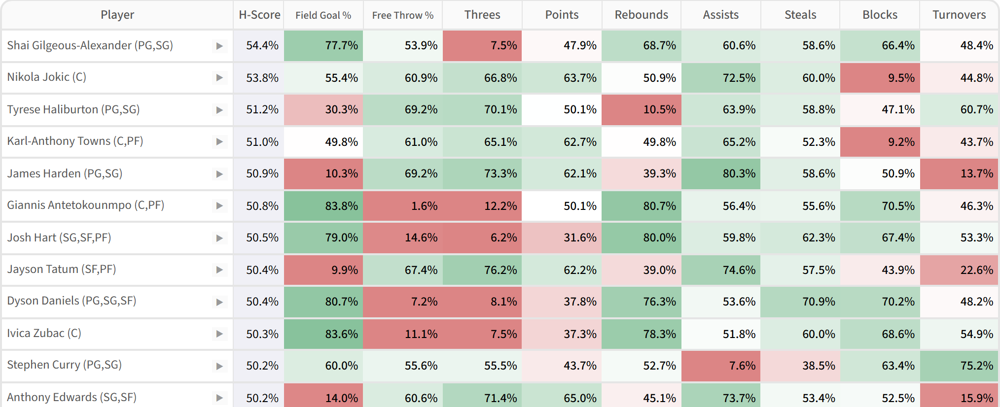
Top Each Category H-scores for the first pick, 2024-25 season
The overall H-score on the left side of the display is both the metric that H-scoring is trying to optimize with its future draft pick strategy, and the one used to rank players. When the format is Each Category, the H-score is defined as the average expected win rate across categories. It is defined differently for the other two formats.
How does the algorithm optimize the overall H-score?
While the spinner is up, the algorithm is iterating, attempting to repeatedly improve its solution. Mathematically, the underlying iteration process is a procedure called Adam.
Adam is a variant of a statistical procedure called gradient descent. The gradient of a function is derivative over multiple dimensions. As an extremely simple example, the gradient of \(x - 3y\) is \(1\) in the x direction and \(-3\) in the y direction. The gradient gives a hint at which direction the function can be minimized or maximized. The idea of gradient descent is to step in the direction of the gradient (or the opposite direction) to try to find a point which minimizes or maximizes the function.
Adam performs gradient descent with additional logic around how to scale the step size in each direction.
Both gradient descent and Adam require an underlying function which has well-defined gradients. The main machinery of H-scoring is the definition of that function.
Roughly, the function for H-scoring has three components: category strength expectations, category-level victory probabilities, and the outer-level objective function. The decisions made by the algorithm impact the category strength expectations, which in turn impact category-level victory probabilities, which in turn impact the outer-level objective function. The total gradient relative to an input decision is the gradient of all three steps relative to the previous, multiplied together.
One might note that Giannis Antetokounmpo ranks highly by H-score. Fantasy veterans will be familiar with Giannis for being undervalued by static ranking systems like overall Z-score, because so much of his value is contingent on punting Free Throw %. H-scoring understands this punting strategy, and evaluates Giannis more appropriately.
The colored numbers to the right are category-level H-scores. They are not direct reflections of the candidate player's characteristics. Instead, they show what the algorithm expects the average win rate against all opponents will be, assuming the candidate player is taken. H-scoring calculates those expectations based on not just the characteristics of the candidate player, but also on previously chosen players and potential future picks. The statistics of future picks are estimated based on H-scoring's preferred strategy for future picks.
Because other picks are taken into account, the categorical strengths and weaknesses presented in the H-score table are often quite different from those of the candidate players. For example, Shai Gilgeous-Alexander's row as a candidate for first pick shows a very low probability of winning the Assist category, despite SGA getting a decent number himself. This is because H-scoring's preferred strategy with SGA involves deprioritizing assists with future picks.
In later draft rounds, the importance of previously chosen players increases and the importance of the strategy for future picks decreases. Also, the strategy for future picks tends to become more stable across players, since the direction of the team is already decided. So categorical H-scores tend to become more consistent across candidate players as the draft goes on.
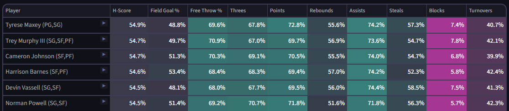
Top H-scores for a round seven pick in a mock draft, with relatively stable scores across categories. Each Category, 2024-25
Most of the time, the algorithm punts one or two categories, reflected by low H-scores in those categories. For the categories it does not punt, it tries to be above average without going overboard.
Why does H-scoring punt some categories?
Punting is a natural consequence of the category-based structure of fantasy basketball, given the properties of Normal distributions.
Victory probabilities can be estimated with Normal CDFs based on team-level category averages, thanks to the Central Limit Theorem. Normal CDFs are differentiable; their gradients are Normal PDFs.
That means that the algorithm implicitly "cares" about categories according to a Normal PDF of category strength. Normal PDFs are thick in the middle and thin on the side, so the algorithm naturally cares most about categories for which it has neutral strength.
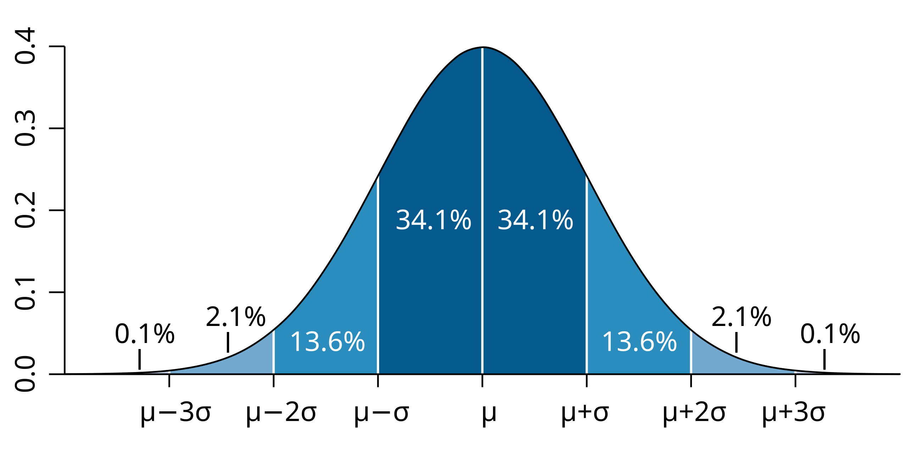
A Normal distribution, from Wikipedia
If a team is strong in a category, the algorithm will deprioritize it. However, this has a negative feedback mechanism; the team will likely get weaker in that category based on future draft picks. It will not try to go overboard and win the category 100% of the time.
If a team is already bad at a category, the algorithm will also deprioritize it. In this case, the feedback mechanism is self-reinforcing- the less the algorithm cares about a weak category, the weaker it will be in that category. That creates a snowball effect, which justifies punting as an alternative to competing in a category.
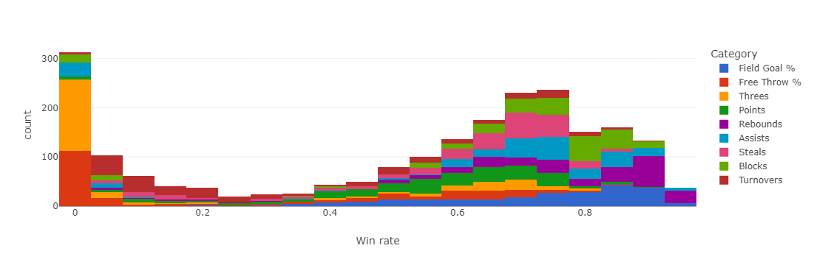
This image from the second paper shows how the algorithm actually performed on a category level in a simulation. It largely either punted categories or tried to be competitive in them
The algorithm punts the most in Most Categories, for which there is no reward for dominating every category. It punts the least for Rotisserie, since Rotisserie requires good luck to win an entire league, and managers can open themselves up to potential good luck by competing in every category.
Most Categories
In Most Categories, teams get wins for every opponent they get a majority of fantasy points against. To reflect that, switching the format to Most Categories makes the definition of the overall H-score the probability of winning a majority of categories (assuming they are independent for the sake of making the calculation less intensive).
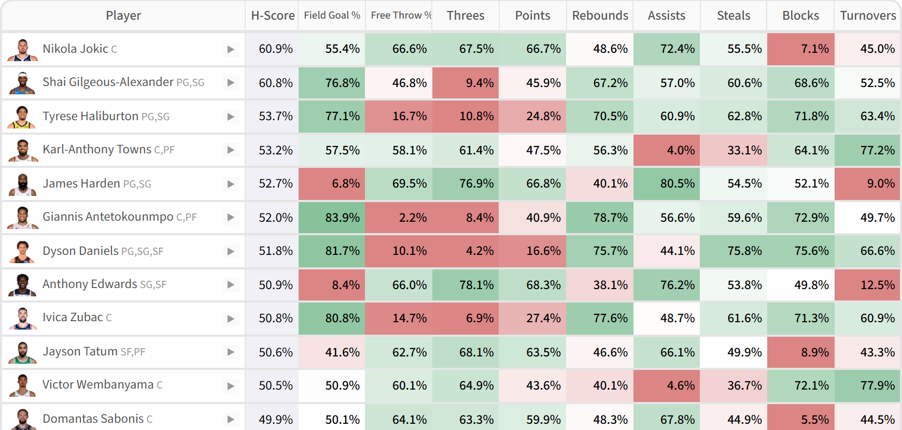
Top Most Categories H-scores for the first pick, 2024-25 season
The table above is based on the same dataset as the Each Category version. The overall H-scores are different because they are based on the Most Categories objective; the associated strategies are optimized accordingly to match the format and maximize the objective for each player. With Most Categories scoring, the algorithm is more incentivized to punt, since winning extra categories is not helpful. This leads to players like Giannis, who benefit greatly from punting, ranking better (sixth vs. fourth in this case).
What is different about the Most Categories algorithm, and why does it take longer to compute?
The format-dependent overall H-score is the outer-level objective function that the algorithm maximizes. Different formats necessitate different structures for that function, which then drive different behavior for the formats. They also require different amounts of computational time.
The objective function is only necessary to calculate when scores are returned. While iterating, what matters is the gradient. Therefore, the speed of the gradient calculation is largely what determines how quickly the algorithm runs for a format.
For Each Category, the objective function is just the sum of probabilities of winning each category. It is relatively simple to calculate, and calculate the gradient of.
For Most Categories scoring, the objective function is the probability of winning a majority of categories (assuming they are independent), which is more complicated. It is calculated with a dynamic programming approach, calculating probability distributions for winning different numbers of categories out of the first N, then expanding to N+1 etc. It does this simultaneously from both sides.
The gradient of the MC objective turns out to be the 'tipping point' probability, which is the likelihood that any given category will end up being decisive (multiplied by the base EC gradient). It is calculated in much the same way as the overall MC objective is calculated, with a dynamic programming approach to calculate the tipping point probability for each category. The way this calculation works is clever, but still mathematically intensive.
Rotisserie
Rotisserie is another degree more complicated than Most Categories, and its objective function uses an approximation of the probability to win an entire league.
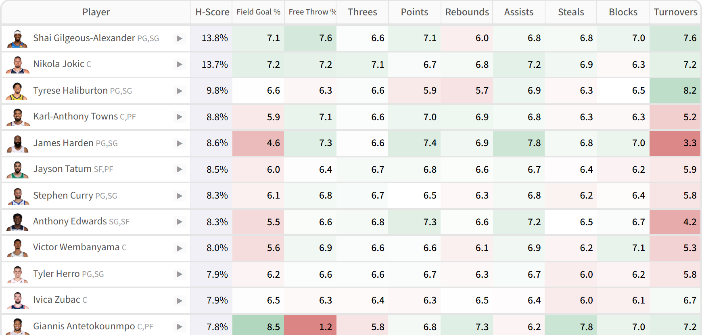
Top Rotisserie H-scores, for the 2024-25 season
The ranking for Rotisserie is significantly different from both Each Category and Most Categories. Giannis falls to eleventh, which aligns with the traditional wisdom that punting is not as advantagous for that format.
Winning a league is harder than winning a matchup, so H-scores are systematically lower for Rotisserie than for the Head-to-Head formats. The average is around 8% instead of 50%.
When the format is Rotisserie, category-level H-scores are expected fantasy point totals per category instead of the likelihood to win a single matchup. One should keep in mind that the expected fantasy point total is just a general average, not what it expects to happen in a winning scenario. While it looks like the Rotisserie algorithm is always punting turnovers, it actually wants to win the category, it is just hoping for luck to do well in it.
How does the algorithm work for Rotisserie?
The Rotisserie objective is mathematically complicated, though actually not much more difficult to compute and differentiate than the Each Category objective.
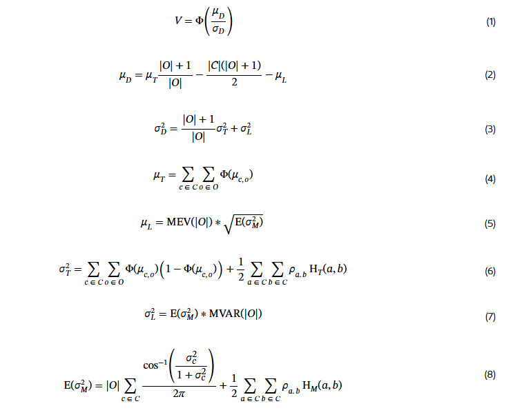
Too many symbols... and this isn't even the whole thing
These equations describe an approximation for how likely a given team is to win a Rotisserie league. They require several pairwise operations across categories, but do not involve combinatorial operations that impact run-time as much as the equations for Most Categories.
Detailed drop-down
The main H-score table gives only indirect insight into the strategies that H-scoring wants to use with each candidate player. The H-score details drop-down, triggered by clicking next to a player's name, explains the inner workings of the algorithm for individual players.
Expectations
The first element of the drop-down is the expectation table. The expectation table breaks down the components of the team on the G-score basis, showing how previous, current, and future picks compare to other teams.
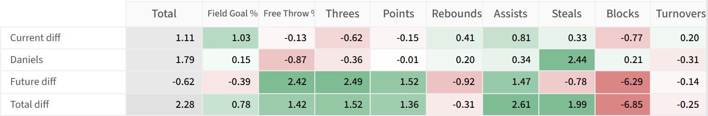
Expectations for a team considering Dyson Daniels in round two, having taken Giannis in round one. Each Category, 2024-25
'Current diff' represents the G-score differential for the draft so far, including players already drafted in the current round and excluding the candidate player. Teams that have not made their pick for the round are filled in with an estimate of the statistics of their next player. So in this case above, 'Current diff' represents other teams' picks so far vs. a team that has already taken Giannis, with estimates filled in for teams that have not yet drafted. 'Future diff' is the expected difference between future picks made by the drafter and those made by other teams, based on the strategy adopted by H-scoring. In this case the G-score for Free Throws is heavily negative because the algorithm wants to punt it with future picks. 'Current diff' plus the candidate player plus 'Future diff' equals the total differential versus other teams, which H-scoring uses to calculate win probabilities.
'Future diff' depends on the strategy taken by the algorithm for future picks. The elements of that strategy are category weights, flex position weights, and roster allocations, the algorithm's choices for which are shown under the expectation table.
Category weights
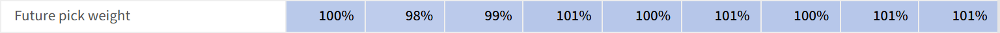
Category weights for future picks, for a team considering Daniels after taking Giannis. Each Category, 2024-25
The category weightings displayed in the first row are based on H-scoring's internal model of how drafting works. It assumes that the drafter will use those weights exactly for candidates going forward, and it also assumes that those weights will have a certain influence on the aggregate statistics of future picks. Category weights show what the algorithm is thinking in terms of which categories it wants to punt.
How does H-scoring pick category weights for future picks? And why are 'punted' categories still high?
The heart of the algorithm is its treatment of future draft picks. Essentially, it assumes that it will be able to choose from a small slate of available players whose statistical profiles are random, conditioned on the scores being equal in terms of total G-score. It assumes that it will choose the best player available based on its choice of category weights. Using some mathematical estimations, it can calculate the expected deviation from the average for each category based on the category weights. The math behind this is quite complicated...
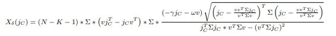
Disgusting!
But the basic intuition is that there are two mechanisms at play
- The more weight the algorithm assigns a category, the higher its picks' expected value for that category will be
- The more specific kind of player the algorithm is looking for, the more overall value needs to be sacrificed to find that kind of player
This allows the algorithm to understand that it can prioritize or deprioritize categories with future picks, with some cost to overall value.
One might note that in the case above, the weight for Free Throws is surprisingly high, despite the obvious fact that the algorithm is deprioritizing the category heavily. The reason for this is that in general, the algorithm does not think it needs to adjust weights all that much in order to skew the available candidates to the categories it wants.
This is somewhat a consequence of the assumptions made at the heart of the H-scoring model, which may or may not be fair. Under the assumption that player statistics are distributed roughly Normally and players are chosen in G-score order, slightly deprioritizing a category is enough to find players who are very strong in the other categories. Completely ignoring the punted category only marginally improves the expected strengths in the other categories, while sacrificing the punted category to a harsher degree than necessary.
In practice, the assumption that players are taken in G-score order is likely particularly problematic. Other drafters may also punt, changing the distribution of available players and necessitating more extreme punting strategies than the algorithm understands.
Flex position strategy
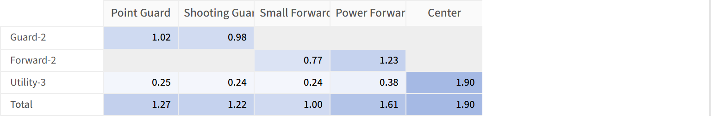
Expected flex-spot usage for the same example — the algorithm leans heavily on Power Forwards and Centers. Each Category, 2024-25
The flex position allocations show how the algorithm expects to use its flex spots, which can take players of multiple positions. This is relevant because the algorithm understands that different positions have different statistical tendencies. In the Dyson Daniels example above, the algorithm is leaning heavily on taking Power Forwards and Centers with its flex spots, likely because they tend to have poor Free Throw rates, and that synergizes with the strategy of punting Free Throws.
How does H-scoring decide its positional strategy?
The algorithm uses a simple model to estimate how its position strategy will influence its team's category-level strengths. It conceives of the fractional position allocations as expected values of how many players of each position it will take using the flex spots. It then adds average strengths within fantasy-relevant players for each position (normalized to sum to 0 G-scores for each position) multiplied by the flex position shares. This crudely estimates the expected differential driven by position.
Modeling flex position decisions as continuous probabilities allows them to be incorporated into the ADAM optimization framework.
Roster allocation strategy
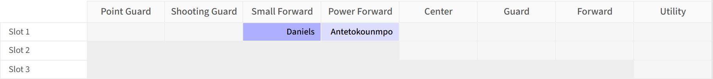
Roster assignments for the same example — Giannis slots in at Power Forward and the Daniels candidate at Small Forward. Each Category, 2024-25
The algorithm also has some leeway in how it arranges players already taken in terms of position, freeing up different positions to take with future draft picks. The roster assignment row shows what the algorithm is thinking in this regard. In the example above, it is choosing to categorize Daniels as a SF, likely because it does not want to take more SFs in general.
How does H-scoring decide how to assign positions to players already drafted?
Position allocations are binary, and therefore their effects cannot be differentiated. In order to avoid costly mixed-integer optimization, H-scoring treats position allocation as a small sub-problem and solves it independently. Before each round of gradient descent, the algorithm estimates how much it wants a player of each position with future picks, by multiplying the gradients relative to categories (which encode how much the algorithm has to gain from improving in those categories) by the average value of a player of that position. It assumes flex spots are slightly more valuable than the best base position. The algorithm is then allowed to assign previously chosen players to various slots, to free up future position slots for the positions it wants to take players in.
This kind of problem is called an assignment problem, because slots are being assigned to players. Its reward structure can be encoded into a matrix as shown:
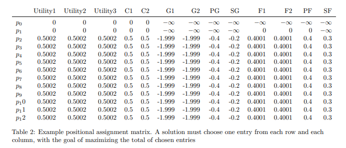
Example of an assignment matrix from the second paper. Previously chosen players accrue rewards of zero because they have already been chosen. Their reward is set to negative infinity for positions they cannot be assigned to so that the algorithm knows it cannot make those assignments
There are fast algorithms available for assignment problems, such as the Hungarian algorithm (though H-scoring actually uses a faster variant).
After the sub-problem is solved, the algorithm will have a strategy for what positions it wants to prioritize with future picks- e.g. two guards, one shooting guard, and one center. It then knows how many flex spots it has, and can optimize how it allocates them through the general gradient descent process.
Customizability
The context in which H-scoring operates is controlled by a handful of settings and parameters in the sidebar.
Formats and categories
The website's implementation of H-scoring supports the three common category formats for fantasy basketball: 'H2H Each Category', 'H2H Most Categories', and 'Rotisserie'. It does not have native support for any additional variants, like using a specific category as a tiebreaker. The format selector defaults to H2H Each Category.
It also supports any combination of categories, across the default nine categories and several alternative options. By default the nine standard categories are selected: Field Goal %, Free Throw %, Threes, Points, Rebounds, Assists, Steals, Blocks, and Turnovers.
For the alternative categories, when using projections, make sure to include them when sourcing the projections. ESPN and DARKO do not forecast them so all of the weight will be from Hashtag or BBM projections.
Algorithmic parameters
The H-scoring algorithm has three input parameters- \(\omega\) (omega), \(\gamma\) (gamma), and the number of iterations- which are configurable by the user through the sidebar. Different parameter choices will lead to different H-scoring results.
\(\omega\) and \(\gamma\) control how the algorithm thinks about the landscape of player statistics that it will have to choose from in the future. Roughly, when ω is high, the algorithm punts more. The default values (ω = 0.7 and γ = 0.25) were configured based on what worked well in testing.
The number of iterations essentially determines how many times the algorithm can try improving its results. Theoretically the algorithm will be more precise with more iterations; in practice the default of thirty is probably easily enough.
Position structure
The position structure used by the algorithm — also shown in the detailed drop-down — is configurable by the user.
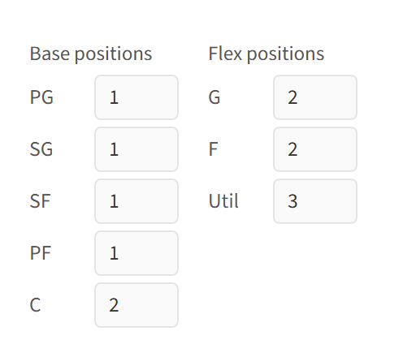
It is important to note that this position structure should not necessarily be the same as the league's position structure. The league position structure might include bench slots which players can be moved in and out of on a day-to-day basis to make their games count. Players sitting on that kind of bench do matter, so long as the team is balanced enough in terms of position to accomodate all the players who are active on a given day. Those bench slots should be included as Utilities, or perhaps extra Guards or Forwards to ensure adequate balance. The proper configuration will depend on the rules of a league and some degree of personal preference.
Timing
H-scoring is not an instantaneous process. In general, the algorithm will take less than a second to complete. But it could take longer if the format is 'Most Categories', the number of iterations is high, or the number of candidate players, categories, or drafters is high. It also takes extra time upon the first page load, because data needs to be pulled in from Snowflake.
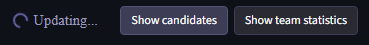
The updating spinner, which indicates that the algorithm is running
Limitations
H-scoring has numerous limitations. Some of the most major are
- H-scoring is reliant on a single set of projections which may differ from the beliefs of other drafters. Assuming its projections are correct, the algorithm can become overconfident and assess its own team as being so strong that the only way to improve it is to "un-punt" a category. This can lead to late round picks which run counter to the build of a team. The website does have a way to mitigate this, to a degree- see the section on the Bayesian strength adjustment
- The optimization process for H-scoring only considers one strategy profile. It does not consider how robust players are to different strategy profiles, which may be relevant because circumstances can change during a draft, and the algorithm might switch strategies drastically
- The internal logic of H-scoring does not understand that other drafters may also be trying to punt categories. This will lead to inaccurate projections of other teams, and therefore inaccurate projections of expected win rates
- H-scoring does not model category variance based on players. Instead, it assumes that week-to-week variance is the same for all matchups. This is not always accurate, especially when a team is punting a category
- H-scoring's model for what sorts of players will be available in the future is simplified, and may fail to properly account for individual players with exceptional profiles
- H-scoring does not take into account the effect of streaming players, trading, etc. These all may add additional strategic considerations